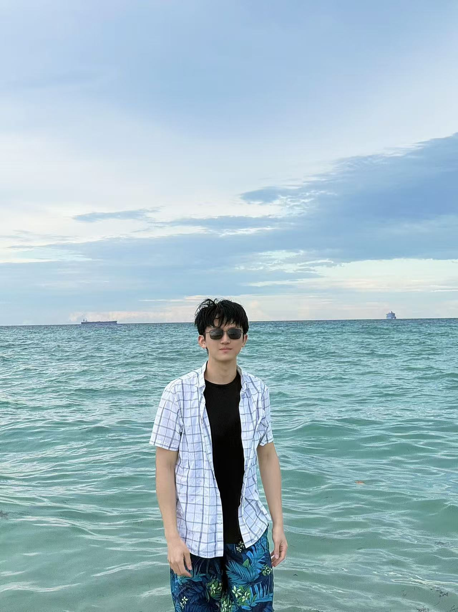

About/关于

Yijiang Yao / 姚羿江
Undergraduate Student / 本科生
ZJU-UIUC Institute, Zhejiang University / 浙江大学-伊利诺伊联合学院
Electrical Engineering / 电气工程及其自动化
UIUC Exchange Student (2025–2026) / 伊利诺伊大学交换生
ZJU-UIUC Institute, Zhejiang University / 浙江大学-伊利诺伊联合学院
Electrical Engineering / 电气工程及其自动化
UIUC Exchange Student (2025–2026) / 伊利诺伊大学交换生
研究方向：Power Systems & AI，Physics-Informed Neural Networks，Neural Network Formal Verification
- yijiang.23@intl.zju.edu.cn
- Urbana-Champaign, IL & Hangzhou, China
ZJU-UIUC Institute, Zhejiang University / 浙江大学-伊利诺伊联合学院
B.Eng. in Electrical Engineering and Automation · 2023 – 2027
Core courses: Electromagnetic Waves & Fields (A), Analog Signal Processing (A),
Artificial Intelligence (A), Applied Machine Learning (A+), Data Structures (A),
Digital Signal Processing, Power Circuits & Electromechanical Systems,
Semiconductor Electronics, Electronic Circuits
University of Illinois Urbana-Champaign (UIUC)
Exchange Student · Electrical Engineering · July 2025 – May 2026
Physics-Informed Neural Networks for Distribution Power Flow Estimation
- Built a PINN surrogate model integrating power flow equations and physical constraints for fast power flow estimation.
- Validated on IEEE 123 and IEEE 8500 benchmark systems; extending to transient simulation and large-scale networks.
Formal Verification of Neural Networks via auto_LiRPA
- Studying α/β-CROWN optimization strategies; analyzing bound tightness and computational efficiency experimentally.
ML-Based Electricity–Carbon Coupling and Emission Prediction
- Led project design; built multivariate LSTM/DNN time-series models fusing meteorological and historical load data.
LabVIEW-Based Optical Sensing Platform for Power Electronics
- Designed spectral processing pipeline (normalization + PLSR) for semiconductor emission spectroscopy.
- Independently built a full LabVIEW GUI for integrated data acquisition, processing, and visualization.
Physics-Informed Neural Networks for Distribution Power Flow Estimation
IEEE Conference on Energy Internet and Energy System Integration (EI²), 2025